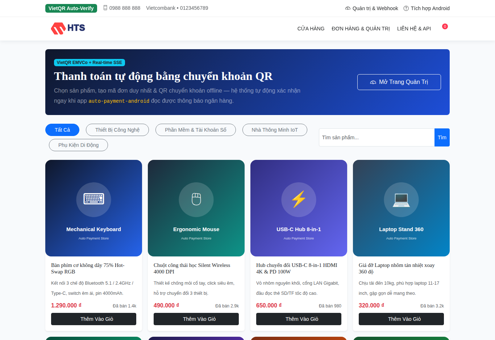
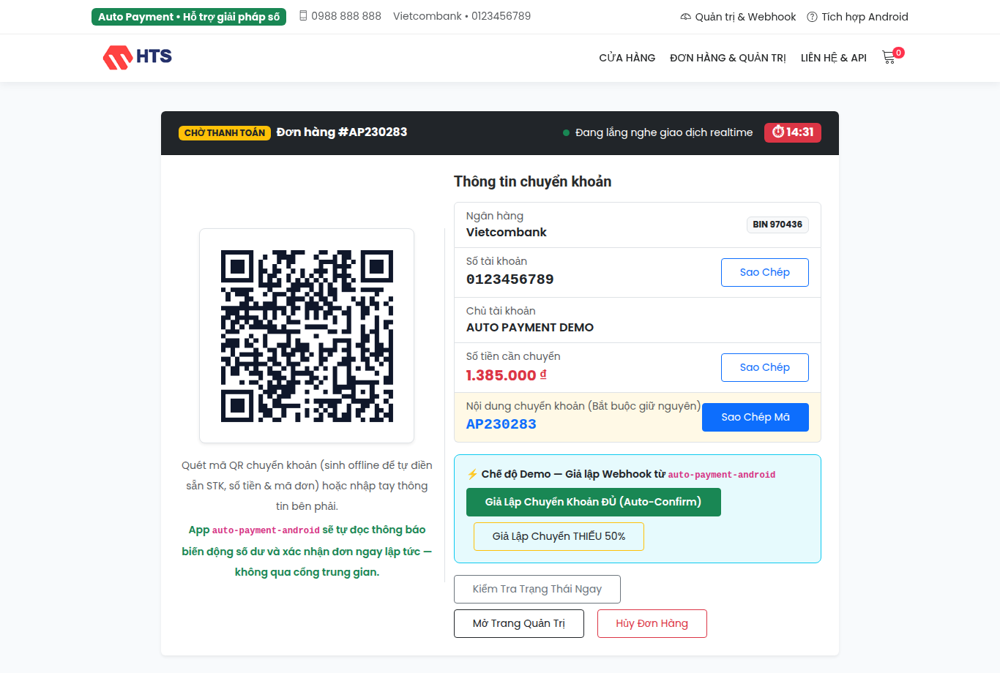
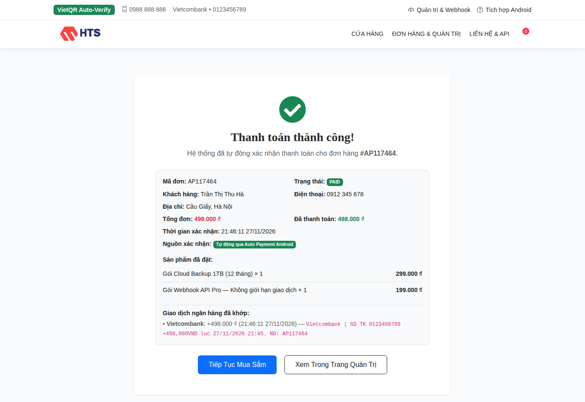
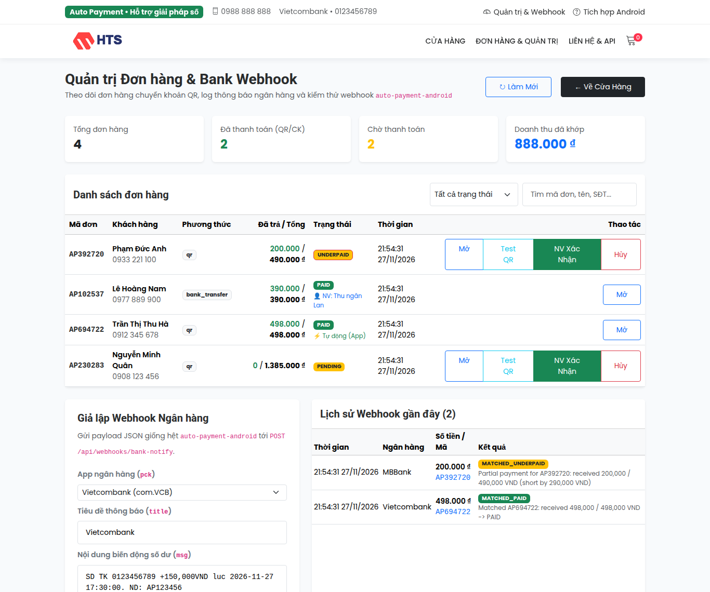
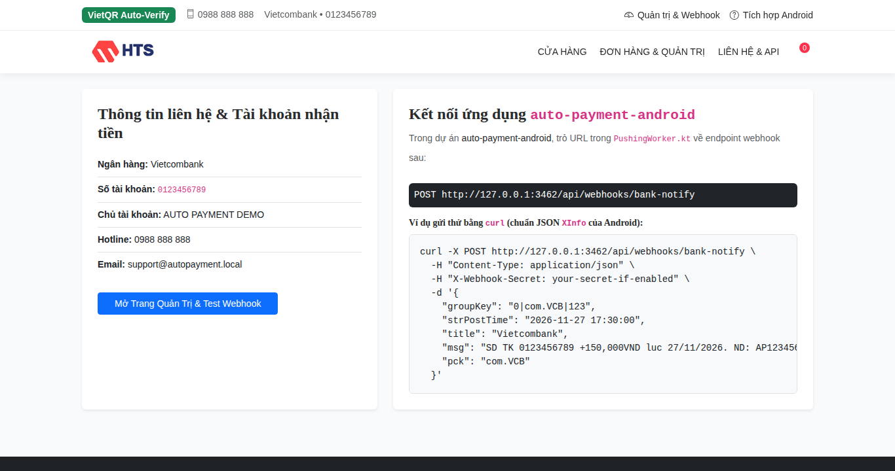

How the Zero-Fee Architecture Works
Instead of paying percentage fees to third-party payment gateways, Auto Payment connects your own web checkout directly to bank push notifications arriving on your Android phone:
Create Order & Local QR
The Nuxt server assigns a unique reference code (e.g. AP123456) and renders an offline EMVCo / NAPAS 247 QR code locally using server/utils/bankQr.ts with exact amount & CRC-16.
Android Listens to Bank Alerts
auto-payment-android reads incoming bank/wallet notifications, matches the order code & credit amount, and posts to POST /api/webhooks/bank-notify.
Instant SSE Order Confirmation
The server verifies the order code and amount, marks the order PAID (or UNDERPAID on partial transfers), and pushes an instant SSE event to the buyer's browser.
Screenshots & Walkthrough




Key Capabilities
- Offline EMVCo / NAPAS 247 QR Generator: Zero external QR API dependencies — builds CRC-16/CCITT-FALSE validated QR payloads directly on your server.
- 12 Supported Vietnamese Banks & Wallets: Parses credit alerts from Vietcombank, Techcombank, MBBank, VPBank, BIDV, ACB, TPBank, VietinBank, Sacombank, Timo, MoMo, and ZaloPay.
- Debit & Duplicate Protection: Automatically rejects outgoing debits (
-150,000VND), deduplicates repeated notifications idempotently, and tracks partial payments (UNDERPAID) until paid in full. - Zero-Config Persistence + Optional Elasticsearch: Ships with 12 demo products and atomic JSON persistence (
data/store.json) out of the box; switches to Elasticsearch automatically whenNUXT_ELASTICSEARCH_BASE_URLandNUXT_ELASTICSEARCH_TOKENare provided. - Admin Dashboard (
/admin): Live revenue KPIs, filterable order table, manual staff approval/cancellation fallback, webhook audit logs, and an interactive webhook simulator.
Quick Start (Local Development)
git clone https://github.com/sinhsac/auto-payment.git
cd auto-payment
npm install
npm run devOpen http://localhost:3000 in your browser:
- Add any product to the cart and proceed to checkout.
- Fill in customer info, select QR Auto Transfer, and place the order.
- On
/orders/APxxxxxx, scan the QR code or click the built-in simulator button to watch the screen auto-confirm via SSE. - Open
http://localhost:3000/adminto monitor revenue KPIs, order states, and webhook audit logs.
Bank Account & Webhook Configuration
Copy local.env to .env and set your bank credentials and webhook secret:
NUXT_BANK_BIN=970436
NUXT_BANK_NAME=Vietcombank
NUXT_BANK_ACCOUNT_NO=0123456789
NUXT_BANK_ACCOUNT_NAME=YOUR ACCOUNT NAME
NUXT_ORDER_PREFIX=AP
NUXT_ORDER_EXPIRY_MINUTES=15
NUXT_PUBLIC_BANK_NAME=Vietcombank
NUXT_PUBLIC_BANK_ACCOUNT_NO=0123456789
NUXT_PUBLIC_BANK_ACCOUNT_NAME=YOUR ACCOUNT NAME
# Recommended in production:
NUXT_WEBHOOK_SECRET=replace-with-a-strong-random-secret
NUXT_PUBLIC_ENABLE_DEMO_SIMULATOR=falseAlways set a strong NUXT_WEBHOOK_SECRET (verified in constant time via X-Webhook-Secret or Authorization: Bearer) and set NUXT_PUBLIC_ENABLE_DEMO_SIMULATOR=false before exposing the site publicly.
Connecting auto-payment-android
Configure PushingWorker.kt inside auto-payment-android to POST incoming bank notifications to:
POST https://your-domain.com/api/webhooks/bank-notify
Test the Webhook with curl
curl -X POST http://localhost:3000/api/webhooks/bank-notify \
-H "Content-Type: application/json" \
-H "X-Webhook-Secret: your-secret" \
-d '{
"groupKey": "0|com.VCB|123",
"strPostTime": "2026-11-27 17:30:00",
"title": "Vietcombank",
"msg": "SD TK 0123456789 +150,000VND luc 27/11/2026. ND: AP123456",
"pck": "com.VCB"
}'API Reference
| Method | Endpoint | Description |
|---|---|---|
GET | /api/categories | Lists product categories (Elasticsearch or built-in demo catalog). |
GET | /api/categories/:id | Returns a single category by catid. |
GET | /api/products | Lists/filters products by category, q, and lastId. |
POST | /api/orders | Creates a new order (qr, bank_transfer, or cod) with offline bank QR. |
GET | /api/orders | Lists orders (?status=, ?q=) and summary KPIs for /admin. |
GET | /api/orders/:code | Returns live order state (auto-expires unpaid QR orders past deadline). |
GET | /api/orders/:code/stream | Server-Sent Events (SSE) stream pushing instant payment updates. |
POST | /api/orders/:code/action | Manual staff confirmation (confirm_by_staff) or cancellation (cancel). |
GET | /api/health | Health check for server monitoring and Android connectivity verification. |
POST | /api/webhooks/bank-notify | Receives auto-payment-android XInfo or generic JSON bank credit webhooks. |
GET | /api/webhooks/logs | Returns recent webhook audit logs and matching outcomes. |
Testing & Production Deployment
# Run automated unit & integration tests (EMVCo CRC16, bank parser, OrderStore)
npm test
# Build production Nitro bundle
npm run build
# Start production server directly
node .output/server/index.mjs
# Or run under PM2 (port 3030)
pm2 start ecosystem.config.cjs